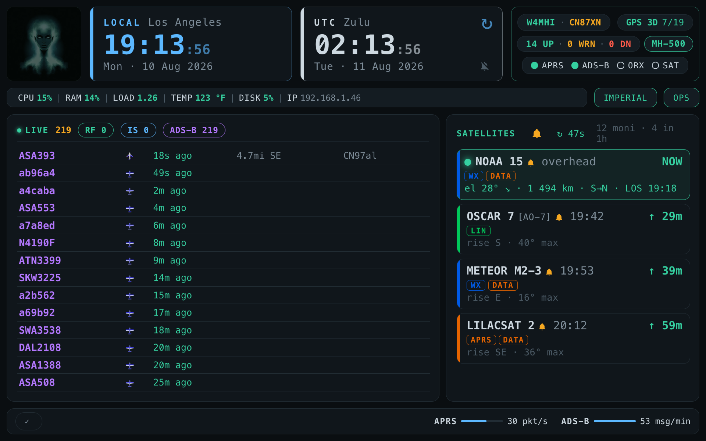

Station Voice
A neural voice that reads your station announcements aloud — pass alerts, the hour bell, and the kiosk avatar
OASIS can speak. A station-wide text-to-speech service turns a
sentence into audio: any subsystem asks common/speech.py (or
GET /api/speech/say) for a phrase and gets back a WAV. Satellite pass
alerts are the first consumer; the kiosk hour bell is the second. The feature is
optional and opt-in — a station that never installs it still
speaks, just with the espeak-ng fallback voice the browser already has. Nothing
about the rest of the suite changes when it is absent.
Two things are easy to conflate here. Browser playback (the
kiosk, or any laptop on the LAN) and the Pi’s own speaker are
separate paths. A healthy /api/speech/say with a silent Pi speaker is a
normal state to see while debugging, not a broken feature.
Piper, and the Jenny voice
The engine is Piper (Open Home Foundation, GPL-3.0), a neural
synthesiser that embeds espeak-ng purely as a phonemiser — text to phonemes;
the audio itself comes from the neural model. The model OASIS uses is
en_GB-jenny_dioco-medium, roughly 60 MB, from the Jenny TTS
dataset and packaged by the piper-voices project.
OASIS ships neither the engine nor the voice. Both are fetched from
upstream by your own scripts/create-oasis-offline.py run, exactly like
the Wikipedia ZIM and the FCC database — it keeps large binaries out of the
repo and leaves each licence between you and upstream rather than making OASIS a
redistributor.
Attribution is a licence obligation, not a courtesy. The Jenny dataset carries a custom attribution licence — it is not CC-BY, so do not describe it as one: there is no licence URL to reproduce and no statement-of-changes requirement. It asks that any software or interface generating audio from the voice credit it, calling it “Jenny” and, where at all practical, “Jenny (Dioco)”. A voice interface that speaks on user action is precisely the case the licence names, so an OASIS station running this voice is in scope. Commercial use is permitted and ownership of the dataset is not claimed. Attribution is not required when distributing generated audio clips — a recorded pass alert needs no notice, but the station that produced it does.
The installer writes the full notice to
features/speech/voices/ATTRIBUTION.txt, alongside the model, so the
credit travels with the file onto whatever SD card it is copied to. A line in a
README is no use once a 63 MB .onnx has been handed to somebody
else. If you pass this station, or a USB image built from it, to another
operator, pass that file with it. The canonical text lives in
features/speech/install.py.
How a sentence becomes sound
The station synthesises; the browser plays. There is deliberately no second audio path to get working.
- A page calls
oasisSpeak(text), which fetches/api/speech/say?text=…. - The server validates the text, then looks for a cached WAV keyed by
sha256of a params version, the voice id, and the text itself. - On a miss it shells out to a Piper subprocess
(
python -m piper), with the text on stdin and never inargv. - The WAV is written to a temp file and atomically renamed into the cache, so a reader never sees half a file.
- The browser decodes the bytes and plays them through the same AudioContext that plays the pass chime.
Why a subprocess and not the Piper Python API. gunicorn runs several workers, and an in-process voice keeps onnxruntime plus a ~60 MB model resident in every one of them. On a 2 GB Pi 3 that is the difference between comfortable and swapping. The cost is the model load per cache miss — measured at ~0.37 s on a Pi 5 — paid once per distinct sentence, not once per request. A fault in native onnxruntime also kills a child process instead of an API worker.
Why text goes on stdin. Satellite names come out of TLE files and
message subjects come off the air. Neither is text OASIS authored. With
shell=False and the text never placed in argv, there is no
quoting to get right.
Announcements serialise, they do not overlap. Three birds crossing
their T-10 threshold on the same tick would otherwise become three-part mush: the
Piper path has no queue of its own, and each call would start playing as soon as its
own decode resolved. So oasisSpeak chains every request behind a
module-level promise and resolves on the audio’s onended, not on
start() — the next sentence begins only when the previous one has
actually finished sounding.
| Endpoint | Returns |
|---|---|
GET /api/speech/status | Whether a voice is installed, its name, model path, sample rate, the local player found (if any), and the cache entry count / bytes / budget. |
GET /api/speech/say?text=… | The WAV. Served with an explicit ETag — the content hash — so a repeated phrase costs one 304. |
/say validates before it ever calls Piper, because the text is not
OASIS’s own: empty text is 400 EMPTY_TEXT, anything past
300 characters is 400 TEXT_TOO_LONG, and control
characters are 400 INVALID_TEXT. A station with no engine answers
503 SPEECH_UNAVAILABLE — the engine’s own stderr is never
leaked to a browser. Note that “Piper is not installed” is the
answer from /status, not a failed request.
The cache lives at features/speech/cache/ with a 50 MB
budget, evicted oldest-first; a cache hit touches the file’s mtime so
hot phrases survive pruning, and the newest entry is never evicted.
The fallback ladder
Every speech call falls back to the browser’s own speechSynthesis
on any failure — endpoint absent, 4xx, decode error, no engine
installed — so a station without Piper behaves exactly as it always did. Which
voice the fallback picks is not left to chance: taking whatever the engine lists
first is a lottery, because speech-dispatcher reports every espeak-ng variant crossed
with every language (14,805 entries on a stock Pi), and the winner was whatever
sorted first — a male formant preset that reads as a 1985 answering machine.
The ladder matches English voices by lower-cased substring, first hit wins:
| Match | What it is |
|---|---|
piper | A Piper voice exposed through the OS, if the box has one. |
jenny | The same voice by name, however it was installed. |
samantha | macOS’s recorded voice, so a dev box sounds as it always did. |
+steph2 | espeak-ng’s female variant — the floor every Pi has for free. |
Failing all four it takes the first English voice on offer. Note that an
empty voice list is not proof there is no voice: Chromium on Linux
enumerates asynchronously and can report [] while speak()
works fine, so the fallback never bails on an empty list.
Installing it
python3 setup-oasis.py # tick "Spoken announcements (Piper voice)"
python3 features/speech/install.py # or install directly
python3 features/speech/install.py --uninstall # remove (idempotent)
The installer is not privileged — everything lands in the venv
and under features/speech/, nothing under /etc or
/usr/local, so it runs as your own user.
| Gate | Behaviour |
|---|---|
| Python < 3.11 | Declines and exits 0. onnxruntime, Piper’s own dependency, publishes no wheel for older Pythons. |
32-bit ARM (armv7l / armv6l) | Declines and exits 0 — no onnxruntime wheel exists for either. |
| No server venv | Exits 1: the feature depends on the server, so run scripts/setup-server.py first. |
| Voice model not in the bundle | Hard failure. An engine with no voice cannot speak, and “installing successfully” without one is exactly the false success this installer exists to rule out. |
An unsupported platform is a correct outcome, not a failed install —
hence exit 0 — and the espeak-ng voice stays in place either way.
The ~60 MB model has no online fallback: OASIS never downloads
it at install time, so it must already be in the offline bundle.
The installer prints exactly one success mark for the engine, and only after a real synthesis produces a non-empty WAV. Everything else — the pip install, copying the model, playing a test utterance — is reported as information. Playing the utterance locally is deliberately not part of pass/fail: a headless box legitimately has nowhere to play it, and that must not fail an otherwise-good install. Uninstalling never touches espeak-ng, which is a different feature entirely.
Spoken pass alerts
An armed bird (see Satellites) chimes Morse “V” — dit dit dit dah — three times at T-10 minutes on 620 Hz, and again at T-5 on 780 Hz. Closer means higher, which reads as more urgent. There is deliberately no alert at AOS: by the time the bird is over the horizon it is too late to get the rig on frequency, which is the entire point of the warning.
The T-10 chime is followed by a spoken heads-up naming the bird and
its maximum elevation — “NOAA 19, in ten minutes, maximum elevation
42 degrees” — scheduled to start after the 2.6 s chime rather
than over it. Because that sentence names an elevation it is a different string for
nearly every pass, and therefore nearly always a cache miss. So the engine
prewarms at T-11: a minute ahead of the announcement, the browser
issues a HEAD request for the same phrase purely to leave the WAV in the
server-side cache. On a Pi 5 that turns a 3.6 s wait into ~1.5 ms.
The prewarm is a HEAD, and that is not negotiable: a
fetch() whose body is never read pins a 2 MiB
/dev/shm data pipe per request for the life of the page. That leak once
cost a kiosk about 500 MB an hour.
The mute bell on the satellites card is one control and owes one outcome: silence, now. Tapping it cuts the Morse V mid-element, stops the sentence being read, and drops every bird still queued behind it — including work already in flight, because an announcement carries the generation it was queued in and a stale generation drops itself rather than playing.
The kiosk hour bell
The Zulu clock on the kiosk dashboard carries a bell button with three states behind one control, because the useful combinations are exactly three:
| State | What happens on the hour |
|---|---|
| off | Nothing. |
| chime | Two slow, low strikes (330 Hz with an octave under it, ~1.8 s total, long decay). |
| voice | The strikes, then the spoken time in two sentences, a second of silence between them: “The time is eighteen hundred Zulu.” … “Local time is fourteen hundred.” One clock at a time is easier to catch than both in a breath. |
Speech without the strike is deliberately unreachable: the strike buys the
attention the sentence needs, and without it the announcement arrives mid-word from
across the room. The bell is also nothing like the satellite VVV — if the two
sounded close you would look up at the rig every hour, which is worse than no chime
at all. The setting is per-device, in localStorage, and independent of
the satellite mute: silencing the passes for an afternoon should not stop the station
keeping time.
It fires on the top of the UTC hour, because the bell belongs to the Zulu card and Zulu is what it announces first. In a half-hour zone the local time is then 11:30 rather than 11:00, and the phrase says so out loud instead of rounding into a lie. The words are built already-spoken (“eighteen hundred”, “oh one hundred”, “midnight”) rather than handing Piper “18:00”, which is a coin flip — “eighteen colon zero zero” is a real outcome.
Quiet hours are 22:00 to 07:00 local time, and local even though the bell sits on the Zulu card: quiet hours are about when the operator is asleep, which no other clock knows. Reading them off the UTC hour would, at UTC-7, silence the shack from 05:00 to 14:00 local and chime all night. Arming the bell during quiet hours is the contest case — it means “tonight”, not “from now on” — so it sets an override that lapses at the next 07:00 on its own. A permanent “quiet hours off” switch would sit forgotten for months and then surprise someone at 03:00.
The hour yields to a satellite pass, and drops rather than queues. A pass alert is actionable and its window is closing; the hour is neither, and it will come round again. Queueing it would hold the pass announcement behind a sentence about what time it is. The pass claims the speaker for the whole alert — chime and the voice that follows — so the top of the hour cannot land in the 2.6 s gap between them.
The Jenny avatar card

On the 1920x1200 kiosk layout only, a square card sits at the left of the clock row carrying a short looping video of the voice’s face. It is hidden on the 7-inch panel, where it would take about 15% of the width from three cards that need it more.
It appears only when a real voice is installed. On load the kiosk asks
/api/speech/status; if available is false the card never
becomes visible. An empty square that never animates is worse than no square, and the
espeak fallback voice has no face to go with it.
- Tap to wake her — she introduces herself with the same
greeting the installer synthesised, so it is a cache hit rather than a fresh render.
The name in that greeting is derived from the installed model, not
hardcoded: a station running a different
.onnxdoes not have its voice introduce itself under the wrong name. The tap is not gated on the satellite mute — that mutes unsolicited alerts, and this is you asking directly. - Dormant is the resting state: dimmed, video paused on the closed-mouth frame, nothing running. She lights up only while speaking, which is also what keeps this clear of the always-animating trap that pins a Pi’s compositor at 60 fps.
- The glow is her own colour, sampled from the clip itself (a cyan-toward-green, hue ~172), not the dashboard accent, which is lime and reads as a different character sitting next to her.
- The clip carries no audio. Speech still comes from
/api/speech/say, so the words can change without re-rendering the video.
The mouth starts on audio onset, not on request — and that is a fix, not an accident. Between asking for a sentence and hearing it sits a Piper synthesis, measured at 3.6 s on a Pi 5 for an uncached line. Waking her at call time meant her mouth ran for those 3.6 s with nothing coming out, which reads as broken. The wake now fires one statement before the first sample. It is also idempotent: a run of three birds is one continuous piece of speech, and restarting the clip between them would jump her back to the closed-mouth frame mid-sentence.
Troubleshooting
| Symptom | Cause & fix |
|---|---|
| No avatar card on the kiosk | Piper is not installed (or the layout is not 1920x1200). Check
curl -s localhost:8083/api/speech/status — available:false
means no voice. Run python3 features/speech/install.py. |
available:false but the wheel is installed |
The finding that costs the most time. Piper will not load a model without its
.onnx.json sidecar, so a lone .onnx is invisible to it.
ls -la features/speech/voices/ must show a matched pair.
Rebuild the offline bundle so both files ship together. |
| Total silence on the kiosk, fine on a laptop | The kiosk launcher is missing --autoplay-policy=no-user-gesture-required.
Browsers start an AudioContext suspended until a user gesture, and the kiosk boots
unattended and is never touched. Check with
grep -o 'autoplay-policy=[^ ]*' /usr/local/bin/oasis-browser-launch. |
| Nothing at all in a laptop browser | Expected on a page you have not clicked yet — the autoplay flag only covers the kiosk. Click anywhere once (the mute bell and the hour bell both count as the unlocking gesture), then wait for the next alert. |
/say returns 200 and real bytes, but the Pi’s own speaker is silent |
That is XDG_RUNTIME_DIR, not the sound card. oasis.service is a
system unit running as your user — right UID, no session environment — so
a player it spawns cannot find the UID-scoped PipeWire socket. Confirm
ls /run/user/$(id -u)/pipewire-0; loginctl enable-linger $(whoami)
is the usual fix for a headless box. |
| “No player found” | which pw-play paplay aplay — the server probes those three, in that
order. None resolving is fine on a headless box: /api/speech/say still serves
every browser on the LAN. |
| Text rejected outright | Working as designed. EMPTY_TEXT, TEXT_TOO_LONG past 300
characters, INVALID_TEXT for control characters — satellite names and
message subjects are not text OASIS authored, so /say never trusts them
blindly. |
piper exited N: … in the log |
The tail of Piper’s own stderr is almost always the real root cause: a corrupt
sidecar, an ABI mismatch on the installed onnxruntime wheel, or a timeout on a
very slow Pi. |
| The voice sounds like a 1985 answering machine | You are hearing the fallback, not Piper. Something failed on the /say path
— start at /api/speech/status. |